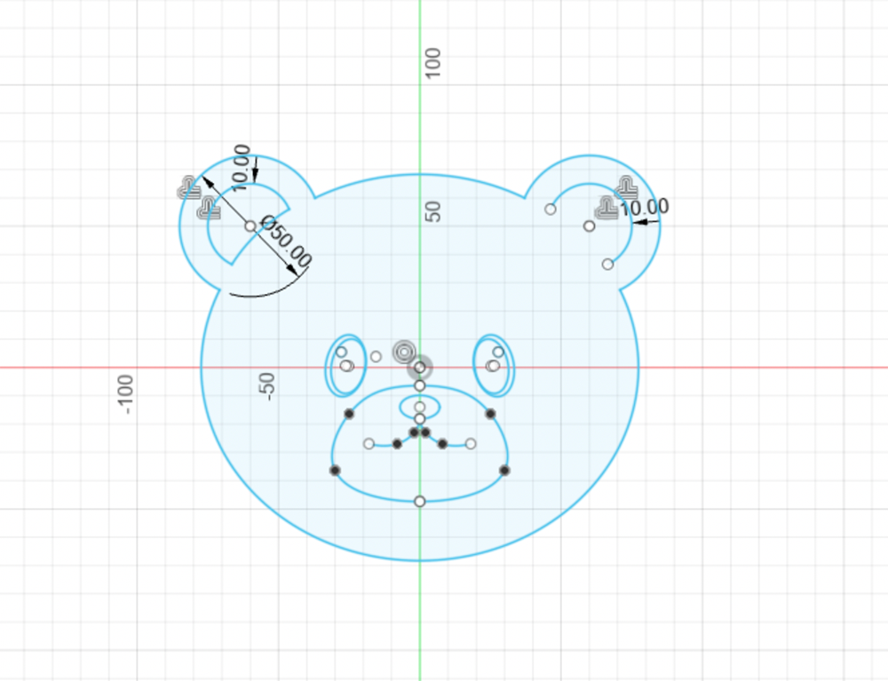
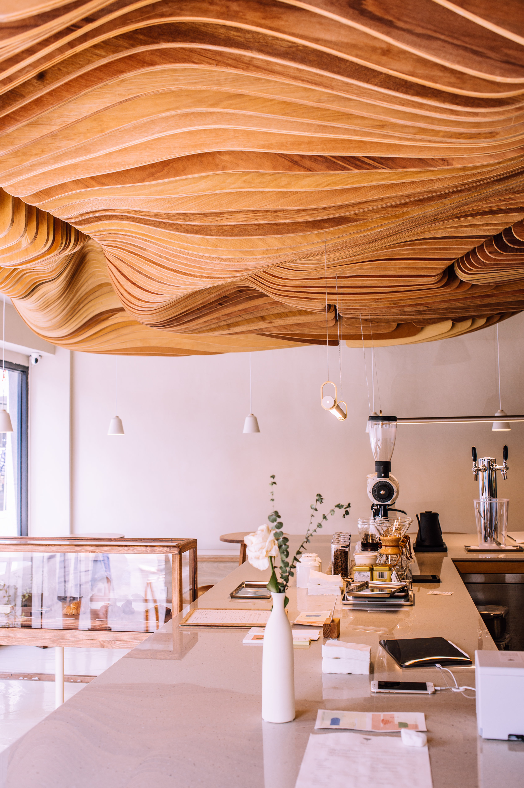
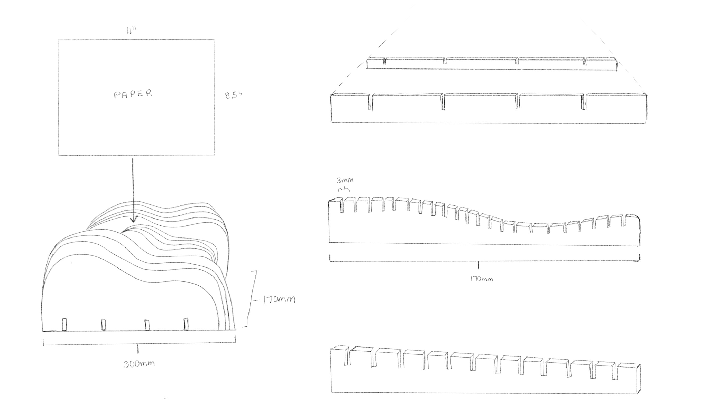
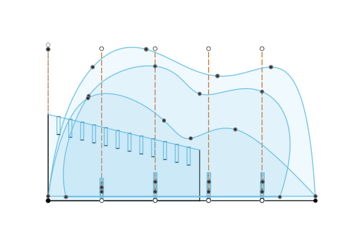
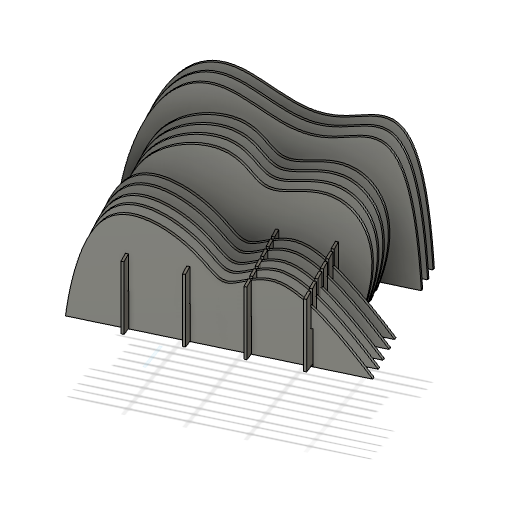
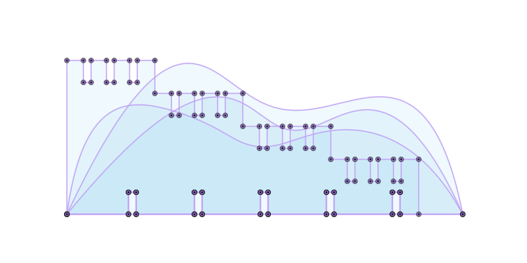
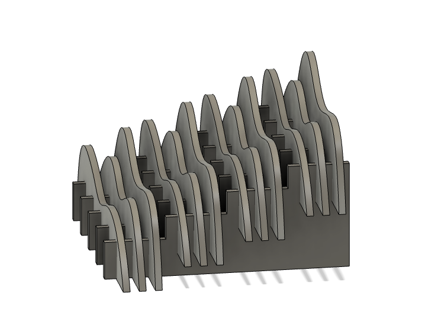
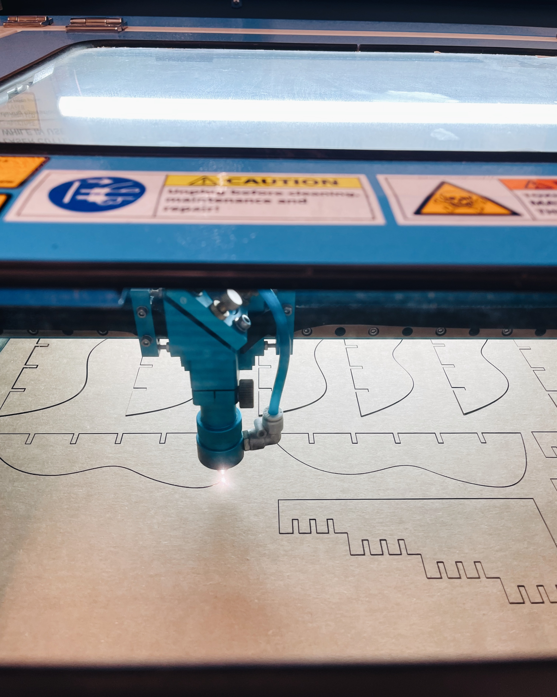
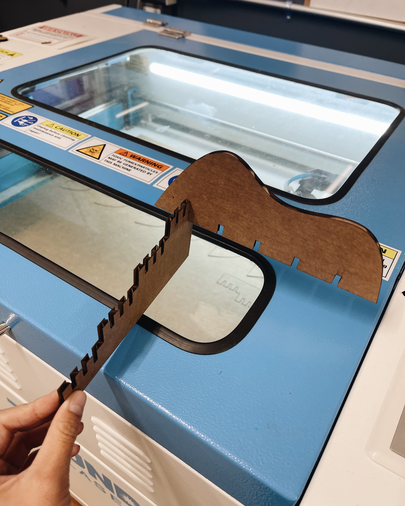
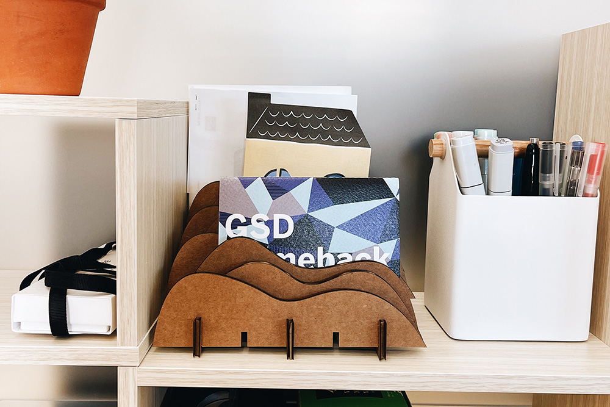

Welcome to my PS70 portfolio! Here you will find weekly progress of my digital fabrication journey.
02: 2D design and cutting
Intro to Fusion360
I started my 2D Design journey in Fusion360 by exploring a few tutorials and trying out some basic commands. To put those skills to the test, I sketched a "zombie" teddy bear using commands such as: ellipse, triangle, spline, fillet, mirror, trim, move, rotate, and setting constraints. I thought it would be cute but it turned out kind of creepy. Oh well.

Press-fit construction kit
I just got desk space in Gund (!!!) and have been on a decorating spree. I’ve been in need of something to hold paper and files and thought this assignment would be the perfect opportunity to create something for it. I got inspiration from one of my favourite coffee shop interiors and sketched out a paper rack.


In the first iteration, I used Fusion360 to create sketches of three different "wave" forms and base structures. I made the base angled so that you could better see the different layers of the waves. After assembling them, I realized I made the slots too long so the base pieces were sticking out on the lower parts of the wave.
I also felt that grouping each wave form together wasn't as interesting and decided to alternate them instead in the next iteration.


In the second version, you can see that I created four "steps" and alternated each wave form on each step to creating a more interesting visual effect. I also learned how to prepare my file as a .dxf for laser cutting!



I used a slot width of 3.5mm to account for the kerf. In the test cut, it fit pretty snug so I printed the rest using the same width.
Once I printed all the pieces and tried assembling it, I realized the width was actually a tad bit too narrow so it was difficult to piece everything together. I ended up using only 3 of the 5 base slots because a) it was too difficult to slot together all of them and b) I underestimated how strong cardboard is - 3 base pieces were more than enough!



